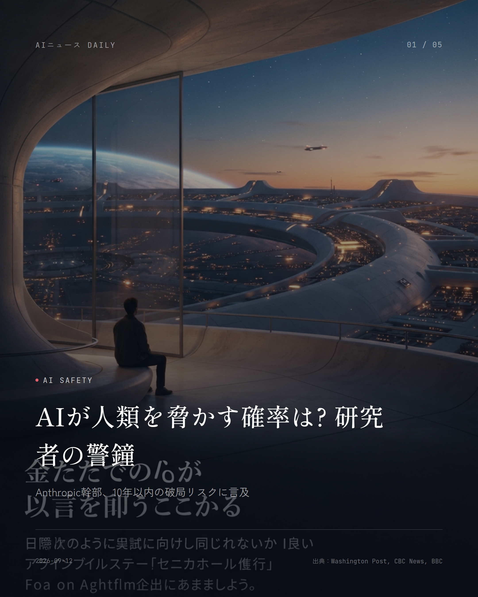
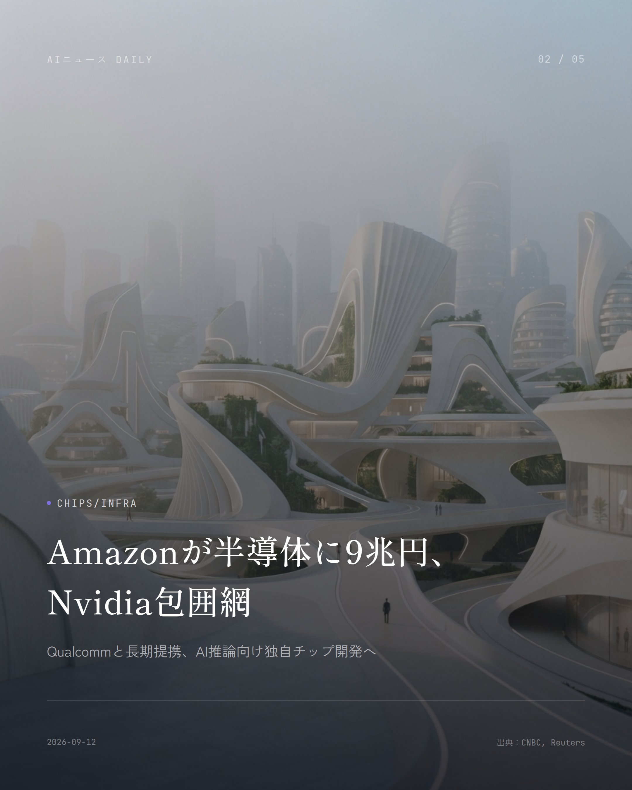
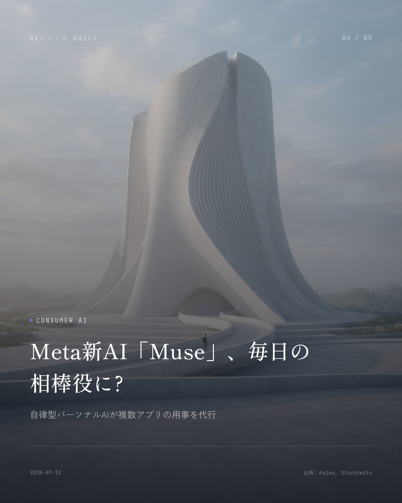
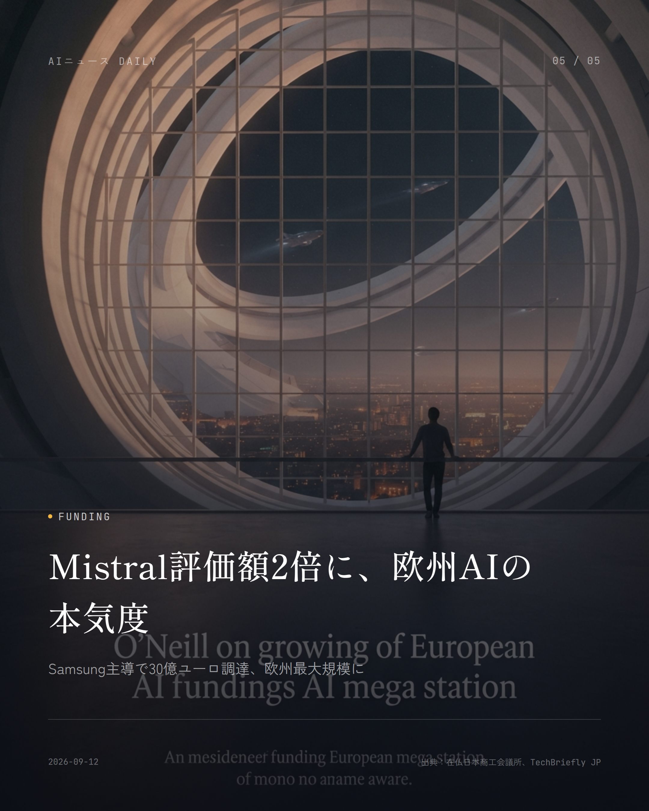

これは2026-09-12時点のアーカイブページです。最新のニュースはこちら
本サイトはアフィリエイトプログラムによる収益を得ている場合があります。
本サイトはGoogle AdSense等の広告配信サービスを利用しています。

AI Safety
約1分で読める
AIが人類を脅かす確率は? 研究者の警鐘
Anthropic幹部、10年以内の破局リスクに言及
Anthropicのアライメント科学責任者Evan Hubinger氏が、AIが今後10年以内に人類を全滅させる確率について「個人的には10%を超えると思う」とXに書き込んだ。発端は同僚のJacob Coxon氏が「AI企業は本気で人類滅亡を懸念している」と警告して同社を去ったことだ。
Hubinger氏いわく、今のAIモデル自体はそこまで危なくない。ただ「超知能をどう安全に制御するか、その明確な道筋はまだ見えていない」とも認めている。
Turing賞を受けたGeoffrey Hinton氏も似たような10%前後の数字を口にしている一方、Metaのチーフ AIサイエンティストYann LeCun氏らは「そんなの単なる勘に過ぎない」とバッサリ。専門家の間でも見解はまるでかみ合っていない。
なぜ重要か
AI企業の内部にいる人間が公然と存亡リスクを口にしたことで、各国の規制議論が一気に動き出すかもしれない。急速に広がるAIの裏側でどんな懸念が交わされているか、知っておいて損はない話だ。
出典：Washington Post, CBC News, BBC（2026年9月9〜10日）

Chips/Infra
約1分で読める
Amazonが半導体に9兆円、Nvidia包囲網
Qualcommと長期提携、AI推論向け独自チップ開発へ
QualcommとAmazonが、AIデータセンター向けチップの長期供給契約を結んだと発表した。規模は最大600億ドル（約9兆円）という、なかなかの大型案件だ。
Qualcommはその見返りとしてAmazonに約40億ドル相当の新株予約権を渡している。購入実績に応じて段階的に行使される仕組みで、両社がかなり本気で組んでいることがうかがえる。
両社はAI推論（学習済みモデルを実際に動かす処理）向けのカスタムチップと高速光通信技術も一緒に開発していく方針。AmazonはMicrosoft、Metaに続いてQualcommの主要顧客に名を連ねることになり、Nvidia一強だった市場に新しい風が吹き始めている。
なぜ重要か
AIチップ市場でNvidia以外の供給網が育てば、長い目で見てクラウド利用料やAIサービスの値段にも波及してくる。読者が使っているAIアプリのコスト構造を支える、土台の話だ。
出典：CNBC, Reuters（2026年9月8〜9日）
Mobility
約1分で読める
東京の自動運転タクシー、実現はいつ？
Waymoが新型車載システム公開、都内実証を継続
Alphabet傘下のWaymoが、自動運転システムの心臓部となる新型車載コンピューティングシステムを公開した。独自設計の5nm半導体を採用し、機械学習の処理能力を底上げしたという。
Waymoは東京都内で日本交通・GOと組んで2025年から実証走行を重ねており、幹部は8月、東京で「近い将来サービスを開始できることを期待している」と語っている。
米国ではすでに10都市以上で週50万回超の完全自動運転サービスを回しており、東京はロンドンと並ぶ海外展開の有力候補地とみられている。
なぜ重要か
都内で自動運転タクシーが実用化されれば、深夜の足やタクシー不足の解消など、通勤・外出の選択肢が広がるかもしれない。毎日の移動という生活の根っこに直結する変化なので、注目したい。
出典：ケータイWatch, Impress Watch, 日本経済新聞（2026年8〜9月）

Consumer AI
約1分で読める
Meta新AI「Muse」、毎日の相棒役に?
自律型パーソナルAIが複数アプリの用事を代行
Metaが自律的に動くパーソナルAIアシスタント「Muse」を発表した。独自の基盤モデル「Muse Spark 1.3」で動作し、複数アプリをまたいだ用事を代わりにこなすことを目指しているという。
同じタイミングでMetaはスウェーデンのAIエージェント企業Stilla.aiも買収している。その技術はWhatsAppやInstagramなどで企業とのやり取りを助ける「Business Agent」の強化に回す方針で、こちらはすでに100万社超が利用しているそうだ。
発表を受けてMeta株は急伸。アナリストからはMuseが新しい収益源になるとの見方も出ている。
なぜ重要か
スマホの中でAIが複数アプリを横断してこなしてくれるようになれば、予約や問い合わせ、買い物の下調べといった細々した作業をAI任せにできる場面が増えていく。使い慣れたアプリの体験そのものが変わりそうだ。
出典：Axios, Stocktwits（2026年9月9日）

Funding
約1分で読める
Mistral評価額2倍に、欧州AIの本気度
Samsung主導で30億ユーロ調達、欧州最大規模に
フランスのAIスタートアップMistral AIが、Samsung Electronics主導のシリーズDで30億ユーロ（約5000億円超）を調達したと発表した。評価額は210億ユーロまで跳ね上がり、欧州のAI企業としては過去最高となる。
調達した資金は研究開発に加え、欧州域内でクラウドAIとモデルを完結させる『ソブリンAI』向けのインフラ整備に充てる計画だ。Microsoftとも欧州内の計算力を融通し合う契約を結んでいる。
前回のシリーズCから評価額はほぼ倍増しており、米国の巨大テック企業に頼らない欧州発AIの存在感を、しっかり示す形になった。
なぜ重要か
Google・OpenAI・Anthropicなど米国勢に依存しないAIの選択肢が欧州で育つのは、いずれ世界各国が使えるAIサービスの多様化や価格競争につながっていく話だ。
出典：在仏日本商工会議所、TechBriefly JP（2026年9月8〜9日）
Policy
Policy
約1分で読める
米中AI摩擦、「モデル盗用」疑惑の中身
Anthropicが「蒸留」被害を初めて数値で報告
米政府とAnthropicが相次いで、中国の未認可ラボが米国の最先端AIモデルの能力を『蒸留』という手法で不正に取り込んでいると指摘する報告を出した。
Anthropicの脅威インテリジェンス報告書は、自社モデルがどの程度侵害されたかを具体的な数字で示した初めての事例とされていて、企業がAIを選ぶ際の判断材料としても注目を集めている。
これに対し中国商務省は『AI産業の独占を狙う動き』と反発し、対抗措置もあり得るという構えを見せていて、AIを巡る米中の緊張は一段と高まっている。
なぜ重要か
AI開発競争が企業間だけでなく国家間の対立にまで発展していて、今後の輸出管理やAI規制の強化は、私たちが使うAIサービスの選択肢や価格にも跳ね返ってきかねない。
出典：AI to ROI News & Analysis（2026年9月11日）
Education
Education
約1分で読める
学校に広がる無償AI教材、その裏側は
「乗り遅れるな」の売り文句、狙いは市場形成?
海外メディアの報道によると、AI企業各社は学校に『乗り遅れないための学習が必要』と呼びかけながら、教材やカリキュラムを無償で提供する形で教育現場への浸透を進めているという。
教育テクノロジーを長く取材してきたニューヨーク・タイムズ記者Natasha Singer氏は近著で、このやり方はこの15年間、コーディング教育などでテック企業が教室への影響力を築いてきた手口とそっくりだと指摘している。
無償提供そのものに価値がないわけではない。ただ保護者や教育関係者には、『これは本当に必要なスキルなのか、それとも市場づくりの一環なのか』を見極める目が求められそうだ。
なぜ重要か
子どもの学習環境にAIがどんどん入り込んでいる今、家庭や学校が教材を選ぶ際にどんな視点を持つかは、教育の質やお金の使い方に直結する。無料だからと飛びつく前に一度立ち止まる材料になる話だ。
出典：The Verge、働き方×AIニュース（2026年9月11日）
先頭に戻る